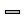
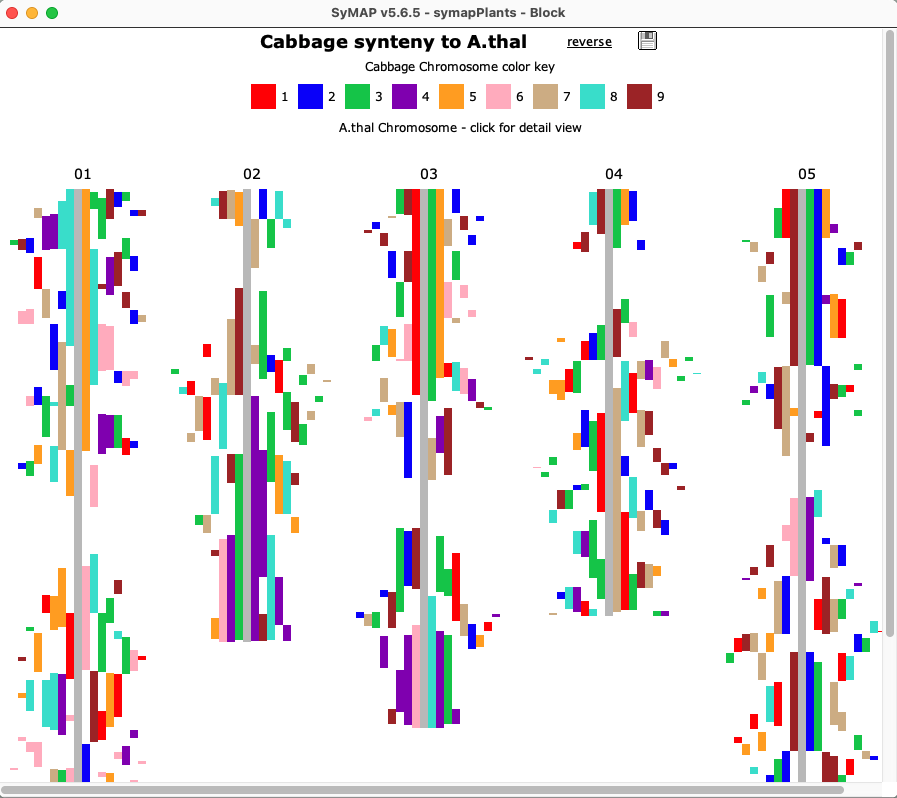
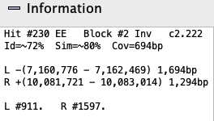
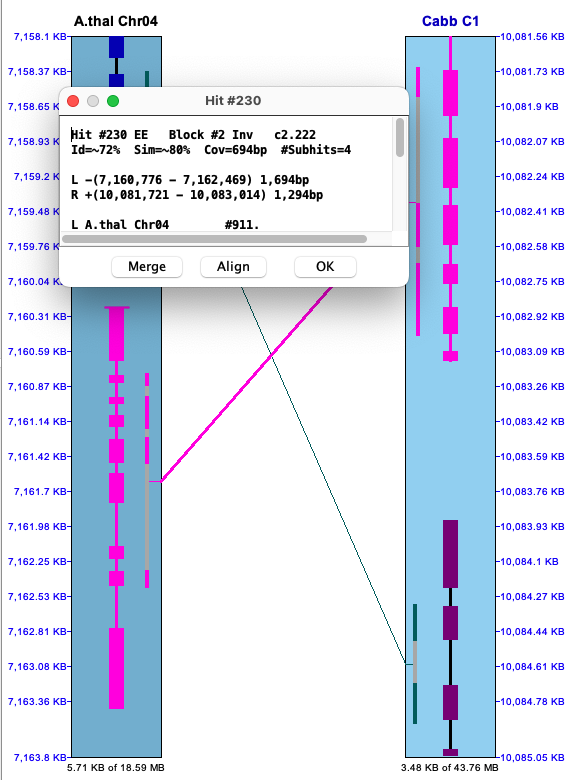
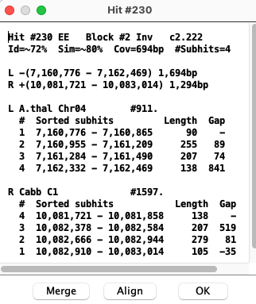
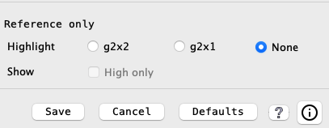
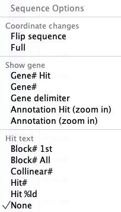
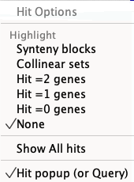
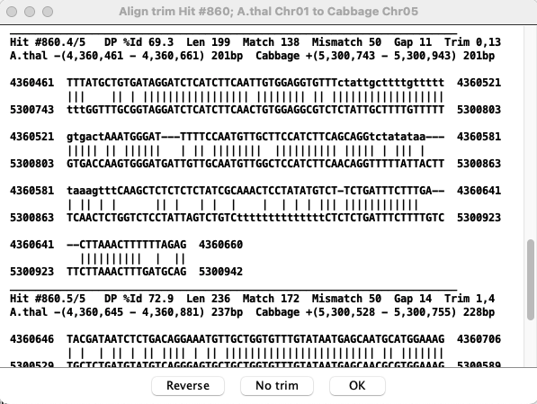

This guide is for the
- For detailed information on installation, see the System Guide.
- Please send bug reports and suggestions to symap@agcol.arizona.edu.
- Queries user guide is a separate HTML page.
- The documentation always applies to the latest release.
|
• General
All colors mentioned in this document are the defaults.
|
Citation: The SyMAP User Agreement requires you to cite the following publication if you use SyMAP results in a paper, poster, or presentation.
C. Soderlund, M. Bomhoff, and W. Nelson (2010) SyMAP: A turnkey synteny system with application to plant genomes. Nucleic Acids Res 39(10):e68. Link
Also cite the MUMmer publication: Marcais et al. 2018 or Kurtz et al. 2004
Terminology
| Chromosome (Group) | For simplicity, sequence groups will be referred to as "Chromosome", though they may be scaffolds, linkage groups, etc. In some cases, "group" is used as a generic term in place of chromosome. |
| Hit (anchor) | A matched sequence between two chromosomes, computed by MUMmer. |
| Clustered hits | SyMAP clusters hits that are close or overlapping into a single hit for display; the MUMmer hits within the clustered hits are referred to as subhits. |
| Paired genes | Two genes joined by a hit. |
| Synteny block | An approximately-collinear sequences of anchors; a block can have intervening genes which do not align. There may be small inverted regions within a block. By default, blocks have at least 7 anchors. |
| Collinear set | A sequence of paired aligned genes with no intervening non-paired genes or inverted gene pairs. A set can consist of 2 or more genes. See details. |
The following is more detailed terminology:
| Cluster Hit Algorithm:
| During the synteny computation, either the • The original • The Summary specifies which was used. There are statistics in SyMAP that have different values based on which algorithm was run. |
g2, g1, g0 | A hit overlaps a gene on both sides (g2), a hit overlaps a gene on one side (g1), a hit overlaps no genes (g0). These are also written G2, G1, G0. |
EE, EI, En, In, nn | E is exon, I is intron, n is intergenic. So a EI is a hit that at least partially aligns to an exon of one gene and an intron on the other, etc. |
| This is the SyMAP assigned number representing the order of the gene. When genes overlap, they are given the same gene number with different suffixes. For example, see View a region. Gene numbering starts at 1 for each chromosome. | |
assigned gene | When genes overlap, they may share hits in the overlapping regions. A clustered hit
can only be assigned directly to one gene pair, which is the |
| Block and !Block | Hits that are in a block and hits that are not within a block, respectively. |
Project Manager
The display in the image on the lower right is shown when the following is executed from the terminal:./viewSymapIs it also available from ./symap, which will include the alignment commands.
|
All projects in the database will be listed on the left panel. The date beside the project name is when it was loaded. If a [n] follows the date, it is part of n computed syntenies. Selecting projects on the left panel shows them on the right panel. Clicking the A check mark (✓) in the |
Project Manager

|
| By selecting a cell with synteny, these views are activated for the selected synteny. Views Circle, Dot Plot, Block, and Summary. | |
| These views will be applied to all checked syntenies. Views Chromosome Explorer, Dot Plot and Queries. |
Displays for Selected Pair (Two-genome views)
| Circle | Dot Plot | Block | Summary | Go to top |
Select a cell in the
Circle Display #1 (Two Genome)
| Control Panel | Colors | Go to top |
The
|
Project name: Move the mouse over a project name and click once:
The project name will be in shown in bold italics
and the projects colors will be used for the blocks.
For example, in the image on the right, A.thal is in italics and all the block are colored with its arc colors; click Cabbage and the block will be colored with its arc colors. Chromosome color arc: Move the mouse over an arc, followed by:
|

|
Circle Control Panel
First group of buttons:
| Takes the display back to its original display settings, i.e. for all buttons up to the the first "|". | |
| Increase the circle size. | |
|  | Decrease the circle size. |
| Rotate the circle clock-wise. | |
| Rotate the circle counter-clock-wise. | |
| Toggle: Rotate the text to face the circle. Un-toggled: As shown in the above image. | |
| Toggle: Draw the chromosomes proportionately to their actual length in basepairs.
Un-toggled: Each species is allocated the same amount of space, e.g. for two species each one gets exactly half the circle. |
The
| Show all blocks | |
| Only show the inverted blocks | |
| Only show the non-inverted blocks | |
| Color the blocks as inverted=green, non-inverted=red. |
Remaining buttons:
| (If self-synteny has been computed) When toggled, the self-synteny blocks are shown. | ||
| (Only available for 2-genome display) When toggled, the reference will be reversed, i.e. the bottom project is shown on top and uses the reference colors (you may need to click the top projects name to use its colors). | ||
| Change the colors of the chromosome blocks, as described below. | ||
| Prints the circle graphics as displayed. | ||
| Displays the online help. | ||

| A popup window of quick help. |
Circle Colors
Circle Colors : OnDot Plot #1 (Two Genome)
| Control Panel | Filter | Go to top |
Dots represent anchors (hits). A blue box indicates a Synteny Block. A chromosome pair is represented by a cell.
|
Clicking a cell will replace the whole genome view with the Within the cell |

|
Control Panel

The following buttons change the size of the display:
| Revert the display back to full genome and its original size. | |
| Increase the dot plot size. | |
| Decrease the dot plot size. | |
| Toggle: Resizes the species displayed on the y-axis according to the current scale of the species displayed on the x-axis. Un-toggled: Each species is allocated the same amount of space. |
The following also change the display:
| Drop-down | The drop-down menu allows the reference species on the x-axis to be changed. |
| See Dot Plot filter below. | |
| See Color Wheel, Print and Help. |
Information buttons:
| Displays the online help. | ||
|
| Popup of quick help. | |
| Popup with more detailed statistics, i.e. more detail than shown at the bottom
of the display above. This text can be copied. An example popup is as follows:
The (%Id=23) is what the filtered percent identity of the hits are, which can be changed in the For the 3 Annotated columns (Both, One, None), the two percentages in parenthesis are the column (Annotated) percent and row (Block Hits) percent. |
Dot Plot Filter
The
|
As soon as a
|

|
| Show all hits that have >N% identity, where the %Identity (%Id) is the MUMmer assigned value. The default label on the left starts at the lowest %Id in the plot (in this case 23%). | |||||||||
| Increase the size of the dots in the plot. | |||||||||
| |||||||||
| |||||||||
| |||||||||
|
Size of dots
|
When the dots are all the same size ( This is illustrated on the right, where the filters are set the |

|
Blocks Display (Two Genome)
The image below shows the|  | Clicking a chromosome displays a window of the chromosome as shown below; the dotted border
indicates an inverted block (i.e. the majority of hits are inverted). Clicking
a |
Summary (Two Genome)
The

Displays for All Projects
| Chromosome Explorer | Dot Plot #3 | Queries | Go to top |
| From the Project Manager, select two or more projects, which will
activate the |
Chromosome Explorer
| Circle #2 | Dot plot #2 | 2D Display | Go to top |
The

Left panel:The left panel controls which species and chromosomes are shown:
- Click a chromosome rectangle to add it to the display in the right panel. Click it again to remove it.
- Click the chromosome number above a chromosome to make it the reference. (The
choice of reference sequence does not matter much for the
Circle view, but it is important for the2D andDot Plot views; see below). - Adding and removing chromosomes changes the
Circle view instantly. To add/remove from the2D orDot Plot views, open theCircle view, make the change, and then re-open the2D orDot Plot .
Click the minus (
Right panel:
The right panel shows the synteny display for the species and chromosomes selected on the left.
The three view for the right panel are
Circle,
2D and
Dot Plot.
The
Circle Display #2 (Multi-chromosome)
This view is illustrated in the above Chromosome Explorer image. All features are described in the first Circle section, except it is chromosome-based instead of genome-based.Dot Plot #2 (Multi-chromosome)
All features are described in the first Dot Plot section, except that it is chromosome-based instead of genome-based. Selecting a chromosome pair (cell) from the image on the left will replace it with the

|

|
2D Display (Multi-chromosome)
| Full display | View a region | Hovers and popups | Control panel | Sequence Filter | Hit Filter | Go to top |
Full display
TheBelow is an image depicting an alignment from A.thal Chr04 to Cabbage Chr01 to B.rapa Chr02. Note that Cabbage Chr1 is the reference chromosome, hence is placed in between the others.
Each chromosome is drawn as a light-blue rectangle, called tracks. The sequence length is shown at the bottom of a track; the coordinates are displayed on the side. If the sequence has been flipped (i.e. A.thal Chr04), its sequence length is shown at the top of the track.
|
The gene annotations (if exists) are drawn down the middle of the rectangle in dark-blue (positive strand) and purple (negative strand). Overlapping genes are horizontally staggered. The hits are the lines between tracks, referred to hit-wires, which connect the hit region on each sequence. Hit-wires colored brown align to the same strand on both sequences (i.e. ++,--) and light forest-green align to different strands (i.e. +-, -+).
The display colors can be changed using the Color Icon in the upper right
of the |

|
Annotations: Annotation data of the following types may be loaded into SyMAP and displayed.
| Annotation Type | Display |
| Gaps | Red band across the chromosome |
| Centromere | Blue "X" across the chromosome |
| Predicted genes and exons | Annotation strip in center of chromosome, as described above. |
View a region
The selected region shown in the image below was created by left-clicking on one chromosome near coordinate 11,638.48kb, dragging the mouse to 11,642.75kb and releasing. The
|
Gene annotations:
The introns are drawn as thinner black rectangles. The exons are drawn as thicker rectangles,
colored dark blue (positive strand) or purple (negative strand).
The staggered genes, where one is further out then the other, indicate overlapping genes; they have the same gene# with a different suffix. Hits: The hit-wires connects the aligned regions on the two sequences. The aligned region graphics, located on the track at the end of the hit-wire, extends the length of the hit. Clustered hits are multiple subhits clustered together with gaps in between, where the gaps are represented by a grey area. |

|
Hovers and popups
| Hit Details | Gene Details | Hit-Gene Details | Go to top |
Hovering the mouse over a hit-wire or gene shows information about them in the
Right clicking on a hit-wire or gene popups a window with additional information.
The information in a popup can be copied by dragging the mouse over it followed by the copy command.
The popup does not go away until the
Note: On Linux Ubuntu, the popup information windows will not stay in front, so get hidden behind the
Hit Details
Information: Hovering the mouse over a hit-wire will show its information in the
| 
 |
Popup: To view the popup of a hit-wire, right click on it; the hit-wire must be highlighted in red from hovering over it to be clickable. The wire and the major genes (0,1 or 2) will be highlighted magenta as shown on the upper right; the corresponding popup is shown below.
The top part of the popup is the same as the hit information shown in the image above.
The bottom part shows the coordinates of the subhits:
|  |
| Select to view the subhits text alignment. See Align. | |
| Conditional: | |
| If there are overlapping hits (Gap<=0), this button will be present.
Select to view a popup of the merged hits. See Hits. | |
| If the '#' column for the target genome (e.g. cabb) are not in sequential order,
this button will be present.
The | |
Gap vs no-gap Cabbage shows the distance between #1 and #2 as -35. Viewing the Cabbage alignment, #327.1 and #327.2 overlap but they do not overlap for A.thal.
Selected Cabbage alignment

| Selected A.thal alignment
|
Gene Details
Information: Hovering the mouse over a gene will show its information in the
| |||||||||||
Popup: To view the popup of the gene description, right-click on the gene in the track; the selected gene will turn cyan.
|
Hit-Gene Details
The example below shows the two genes that are connected by the hit-wire. For the gene popups, the exons are numbered differently; this is due to differences between NCBI and Ensembl annotation files.
Control panel and navigation
| History | Zoom and Show | Color wheel, etc | Navigate | Go to top |

The buttons are described in the order found in the control panel image above.
History Event: SyMAP retains a record of the prior views (like a web browser).
- A History Event occurs when the coordinates or tracks have
been changed by (1) any of the four middle buttons (-,+,shrink,scale),
(2) select a region with the mouse, (3) use the
Sequence Filter to change coordinates. - Any annotation, highlighting, or hit-wire display changes
by
Sequence orHit Filter are NOT a history events. - When a new coordinate change is applied, it becomes the next history event in the list and all previous history events are cleared.
- The first 3 buttons describe below apply to the history events.
| Go back to its original display. | |
| Go back one history event. | |
| Go forward one history event. | |
| Doubles the base pair view region, keeping the same center. | |
| Shrinks the base pair view region by 50%, keeping the same center. | |
| The shrink button reduces the space between tracks. This is useful when viewing more than two tracks, e.g see Exp_2D. | |
| The scale button resizes the tracks so that they are in the same scale (base pairs per pixel) as the reference sequence track in the view. This is a toggle button, so click it again to undo the scale. |
- Check one of the buttons, then click the button and select from the menu (unless the default is desired).
- Select a region by clicking the mouse left button on a location of the chromosome, drag and release - the function will be performed when the mouse is released.
- The functions are described as follows:
| |||||||||||||||
|
Color wheel, etc:
| See Color Wheel, Print and Help. | |
| Prints the graphics 2D region to an image file (note, this does not include the control bar, etc). | |
| Displays the online help. | |
|
| Popup of quick help. |
Mouse navigation:
| View region | Drag left mouse button | Press down on the left mouse button on a chromosome track, drag the mouse and release it.
By default, this will zoom into the selected region for both chromosomes.
This action can be changed with the |
| Resize Track | Drag bottom of track | Position mouse at bottom of track (resize cursor appears), hold down left mouse button, and move mouse. |
| Scroll One Track | Mouse wheel | Position mouse over track and use mouse wheel to scroll up/down the track. |
| Scroll Both Tracks | Mouse wheel | Position mouse in the hit space to scroll up/down both tracks. |
| Popup of partial set of filters | Right mouse button | Position mouse over track area (for sequence filter) or white space between tracks (for hit filter), and click right mouse button. |
Sequence Filter
| Highlight and Show | Graphics | Hit Text | Coordinates | 3-track | Popup | Go to top |
→ All options in the first 3 sections occur immediately;
→ Only
| |||||||||||||
| Display of the sequence ruler along the right side of the sequence. | |
| Display of sequence gaps (drawn as solid red rectangles) along the sequence. | |
| Display of the centromere (drawn as a cyan "X") on the sequence. | |
| Display of the gene with exons along the sequence. (If unchecked, the other gene options are disabled). | |
| Display the hit length line along the inner boundary of the sequence. The subhits are colored brown and the gaps are colored gray (see example). | |
| The • If this is off, the horizontal line is a constant length, taking into account overlapping hits. • If this is on, the length of the line represents the magnitude of the %Identity value for the hit. • If the | |
| Show the value along the edge of the sequence track over the hit-wire near the edge of the track. A value of '0' is not shown. The text is only visible if zoomed in, else, it looks like a black thick line. | Symbol | |
| If the hit is in a block, its block number will be shown. | bN | |
| If the gene-hit is assigned to a collinear set, its collinear set number will be shown. | cN | |
| The number assigned by SyMAP for the hit. | #N | |
| The score value corresponds to the %Identity value for the hit from the MUMmer anchor file. | N% | |
| Nothing is shown (default). |
| All the following coordinate changes take effect on | |
| Reverses the orientation of the sequence track. | |
| Sets the start and end positions of the sequence display to encompass the whole chromosome. | |
|
| The positions of the sequence display can be set via the corresponding text boxes. The units of the values entered can be selected from the accompanying drop down menus (BP, KB, MB, GB). |
|
• Enter a • If the • When • BEWARE: If the Hit Filter |
3-track
| The |  |
| Hit g2x2 | The genes conserved across the 3 tracks will be highlighted. The usage of this feature is a little complex, so the section Conserved provides the details. |
| Hit g2x1 | The genes conserved on ONLY one side are highlighted. |
|
Sequence Filter Popup: A subset of the filters are available by right clicking in the empty space
of the chromosome rectangle, as shown on the right.
Highlighting genes summary:
During a |  |
Hit Filter
| Highlight | Show | Other | Popup | Example | Go to top |
The
|
|
| | ||||||||||||||
Hits that are part of a synteny block.
| |||||
| Hits that are part of a collinear set. See example below and Details. | |||||
| Hits that align to a gene on both sides (g2). | |||||
| Hits that align to a gene on one side only (g1). | |||||
| Hits that do not align to any gene (g0). | |||||
| Show all hits. Precedence: This shows all hits regardless of what else is selected. | |||||
| Move the slider to view only the hits with >= the specified identity.
Precedence: This works in
conjunction with any of the | |
| Enter a block number and only hits from that block will be shown.
Precedence: This takes precedence over everything but the While the filter window is showing, the user can enter a block number following by return to see the block, then try the next one to see the next block. If an invalid block number is entered, no hits will be shown. | |
Hit Popup
|
When hits belonging to blocks or collinear sets are highlighted, subsequent blocks/sets
will have an alternating color relative to one chromosome of the pair, e.g. set #1 hits will be
green, set #2 hits will be pink, set #3 hits will be green, etc (e.g. Example image).
A subset of the highlight filters are available by right clicking in the hit white space, as shown on the right. During a |  |
Filter Example
| The image on the right has the |

|
Base Align
| Graphical Align (from pull-down) | Text align (from hit popup) | Alternatives | Go to top |
To build the synteny, SyMAP uses Promer by default for analysis of two different genomes. Promer translates sequences, uses a fast suffix tree alignment algorithm, then converts the coordinates back to nucleotide. To display the alignment in SyMAP, SyMAP performs a semi-global dynamic programming (DP) algorithm on the nucleotide sequences using the MUMmer coordinates, which can produce a slightly different alignment.
Graphical Align (from pull-down)
Check

The aligned base view of the clustered subhits will appears in a new window. This view consists of a ruler along the top showing the area of the sequence covered, the hits, and the genes. In the lower text panel, it indicates that has been trimmed.
Subhits
Subhits are displayed as lines, where red horizontal lines are mismatches,
forest green is deletion and a downward arrow is insertion.
When two hits overlap, one will be shown above the other. Sometimes one appears to overlap another when they do not;
this happens due to gaps.
Clicking on a hit line shows its base alignment view in the bottom of the dialog; if the input genome sequence was soft-masked, the masking is retained in the alignment.
Genes
Annotated genes are displayed below the hits. Blue exons are on + strand and burgundy are on the - strand.
| Strand for Algo1: Sometimes it is wrong in the |

|
Text Align (from hit popup)
Hover over a hit-wire and right click for the information popup shown on the lower left. The

|  |
Alternative base views
To view the base alignment, use theAnother alternative is to find the hit in the
Dot Plot #3 (Multi-genome)
All selected projects will be shown in the
{kind=link}
{kind=link}
{kind=link}
{kind=link}
{kind=link}
{kind=link}
{kind=link}
{kind=link}
{kind=link}
{kind=link}
{kind=link}
{kind=link}
{kind=link}
{kind=link}
{kind=link}
{kind=link}
{kind=link}
{kind=link}
{kind=link}
{kind=link}
{kind=link}
{kind=link}
{kind=link}
{kind=link}
General
| Self-synteny | Data Download | Color Wheel, Print and Help (?) Icons | Go to top |
Self-synteny
Self-synteny can be viewed in all views (see Demo Dot Plot), with the following exception:- The
2D does not work for a single chromosome compared to itself. However, by going through the dotplot or blocks view, you can click on a self-chromosome block and view it in the 2D view. - The
Queries does not work for self-synteny. - Self-synteny is not as well supported as the multi-species synteny, but it works.
Data Download
There are two ways to download data for SyMAP synteny blocks, individual hit anchors, and annotations:Blocks with gene info : The columns for each block are:
Species1 Species2 Chr1 Chr2 BlkNum Start1 End1 Start2 End2 #Hits Genes1 %Genes1 Genes2 %Genes2 PearsonRThe
Genes1 column is the number of genes fromSpecies1 in the block and%Genes1 is the percentage of genes that have a hit. ThePearsonR is the approximate linearity of the hits in the chain as measured by the Pearson correlation coefficient; a negative PCC is an inverted block.Blocks only : The columns for each block are:
Species1 Species2 Chr1 Chr2 BlkNum #Hits Start1 End1 Start2 End2
Blocks summary : The columns for each species and chromosome pair are:
Species1 Species2 Chr1 Chr2 #Blocks #Hits
Color Wheel, Print and Help (?) Icons
Most displays have one or more of the following icons (Color, Print, Help, respectively):.
Print The print icon is for printing the image, which only saves the graphics area (not control buttons). If this does not provide the view you want, use the system "Screen Capture" (all the images in this document were created with screen capture, along with the images in the SyMAP publications).
Help The ? icon brings up this web page, typically to the correct section (obviously, there needs to be an internet connection).
Color Wheel
This icon opens a menu for customizing colors; the colors changes are saved in a file
called .symap_saved_props which resides in the user's home directory. Hence, the
changes are preserved between sessions and for different SyMAP databases. In contrast,
- Click a tab (e.g. Hit) to view the associated colors.
- Click a color box and a color chooser (far right image) will popup that lets you change the color.
Ok : Instantiate all changes and close the menu.Cancel : Cancel any changes and close the menu.Default : For the selected tab, changes all colors back to the default colors.

| 
| 
|
Dot Plot tab:
|
{kind=link}
| Go to top |
Email Comments To: symap@agcol.arizona.edu